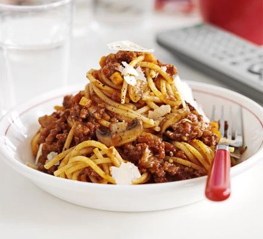

Basic Bolognaise

A batch of Basic Bolognaise!
Whip up a huge batch of bolognese that's fit to feed a hungry crowd, or freeze half for a speedy midweek meal
Ingredients:
- 4 tbsp olive oil
- 6 smoked bacon rashers, chopped
- 4 onions, finely chopped
- 3 carrots, finely chopped
- 4 celery sticks, finely chopped
- 8 garlic cloves, crushed
- 2 tbsp dried mixed herbs
- 2 bay leaves
- 500g mushrooms, sliced
- 1½ kg lean minced beef (or use half beef, half pork mince)
- 6 x 400g cans chopped tomatoes
- 6 tbsp tomato purée
- large glass red wine (optional)
- 4 tbsp red wine vinegar
- 1 tbsp sugar
- parmesan, to serve
Steps:
- Heat the oil in a very large saucepan. Gently cook the bacon, onions, carrots and celery for 20 mins until golden.
- Add the garlic, herbs, bay and mushrooms, then cook for 2 mins more.
- Heat a large frying pan until really hot.
- Crumble in just enough mince to cover the pan, cook until brown, then tip in with the veg.
- Continue to fry the mince in batches until used up.
- Tip the tomatoes and purée in with the mince and veg.
- Rinse the cans out with the red wine, if you have some, or with a little water, then add to the pan with the vinegar and sugar.
- Season generously and bring to a simmer. Simmer slowly for 1 hr until thick and saucy and the mince is tender.
- Serve with pasta and parmesan.